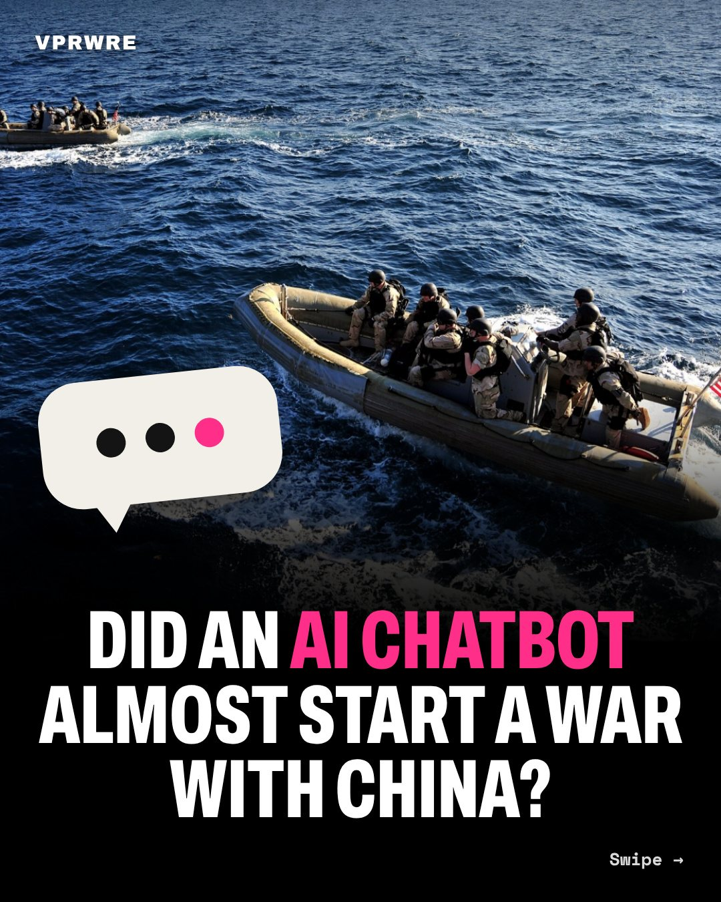

Drama
Did an AI chatbot almost start a war with China?
CNN: a chatbot’s error had armed U.S. troops preparing to board a Chinese ship.

This spring, during the war with Iran, a U.S. military intelligence report claimed a Chinese ship in the Middle East was carrying components of a nuclear weapons program, CNN reported Sept 18. Its sources say armed personnel prepared to board and planes were airborne.
Just before the operation, officials dug into the report. An analyst had asked a chatbot about the ship’s manifest, and it misidentified the cargo. The analyst then used AI again to package the findings as a standard intelligence report. One source called it “entirely false” and said it “almost started a war.”
A Pentagon strategy aims to put AI models in the hands of 3 million personnel; CNN reports there’s no single standard for checking what these tools produce. Which chatbot, and what cargo, are still unknown.
Our take: check every chatbot claim before anyone climbs a ship’s ladder.
Can the military move at AI speed and still check every answer?
The carousel
12 slides · Open on Instagram
Disclosure: VPRWRE drafts with Claude, Anthropic’s AI.